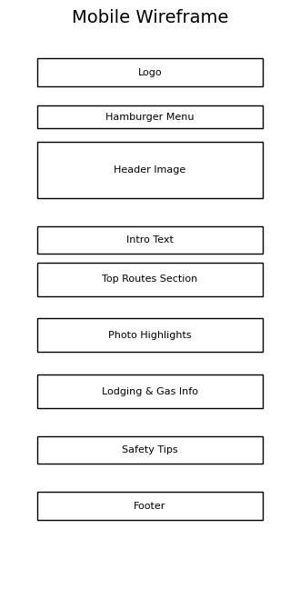
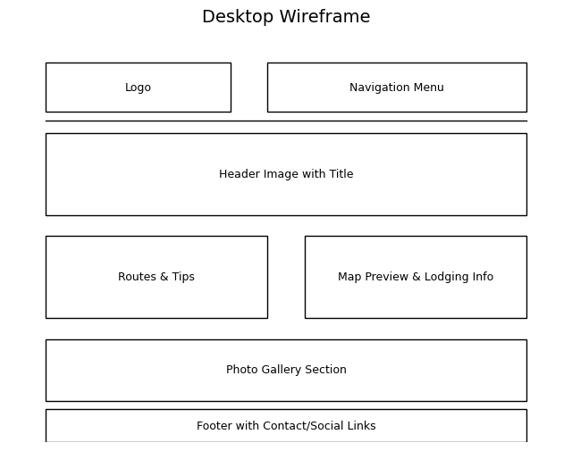

Site Name: Yosemite National Park Road Trip Guide
Description: This name directly reflects the focus of the website. The site will serve as a helpful guide for visitors planning a road trip to Yosemite, emphasizing practical travel tips and beautiful natural highlights.
This website will introduce self-driving routes in Yosemite National Park, including:
Primary Color: #4CAF50 - Used for headings, links, and buttons (evokes nature and freshness)
Secondary Color: #f4f9f4 - Used for background to create a light, clean appearance
This combination ensures a clean layout with a professional yet outdoor-adventure tone.
Mobile View:
Desktop View:
